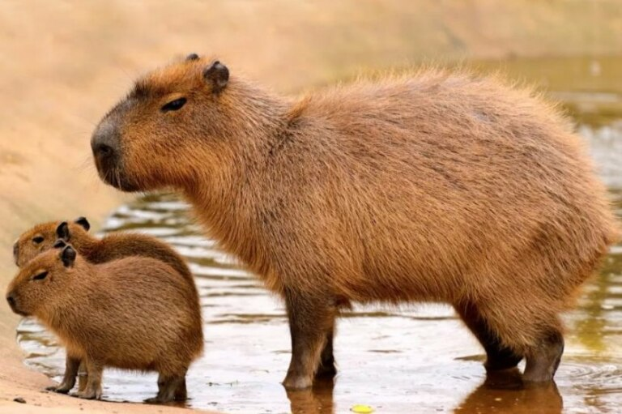

Питаются капибары водными растениями и корой молодых деревьев. Раньше считалось, что водосвинки могут наносить значительный ущерб плантациям бахчевых, кукурузы, риса и сахарного тростника, но это не так. Как морские свинки и кролики, водосвинки поедают свой кал (копрофагия) для обогащения рациона витаминами группы В и лучшего усвоения клетчатки.
